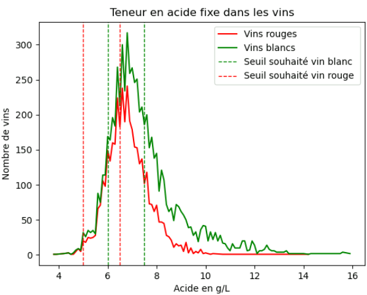

Mes réalisations technique
Situation d'Apprentissage Evaluée
Titre : SAE Développement d'application
Durée : 11 semaines
Contexte :
Cette SAE s'inscrit dans le cadre du deuxième semestre du BUT Informatique. Nous devions développer une application correspondant à un jeu de société ; dans notre cas, il s'agit du jeu de cartes Jinx.
Objectif :
Nous devons développer une application en utilisant les langages C#, MAUI et .NET permettant de jouer une partie exacte comme le jeu de carte.
Travaille réalisé :
- Conception des sketchs de l'application
- Réalisation de la page Paramètre
- Réalisation de la page de Meilleure scores
- Développement des dés
- Possiblité de modifier le son
Sketch qui représente une partie de notre jeu
Image du menu de notre application
Situation d'Apprentissage Evaluée
Titre : SAE Exploitation d'une Base de Données
Durée : 6 semaines
Contexte :
Cette SAE s'inscrit dans le cadre du deuxième semestre du BUT Informatique. Notre objectif est de créer une entreprise fictive spécialisée dans la vente de vin. En nous basant sur des jeux de données publics, nous devons déterminer quel type de vin correspond le mieux à notre entreprise.
Objectif :
Nous devons utiliser des jeux de données publics, nettoyer les données afin d'éliminer les doublons et les informations non pertinentes pour notre entreprise, puis les analyser pour déterminer ce qui aurait été le plus avantageux pour celle-ci.
Travaille réalisé :
- Recherche de jeux de données
- Codage des graphiques représentant les qualités du vin
- Analyse des caractéristiques qualitatives du vin

Image repésentant notre entreprise
Graphique exemple pour l’analyse des qualités